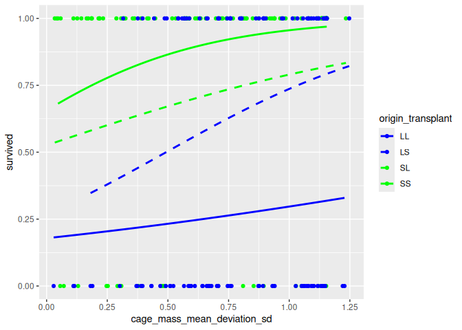

Dialogue
In this document, the dialogue with the AI is described, including all control questions. Of each question, the expected answer is calculated.
library(testthat)
Expectations¶
A paper does not typically hold code (like an R markdown document). Hence, in the end, all the constants are copy-pasted into a paper and then left unchecked.
To make it easy to compare the final paper with the constants we’ve copy-pasted, here are all the constants:
total_n_fish <- 300
n_fish_control <- 60
n_fish_transplanted <- 240
origin_values <- c("Lake", "Stream")
transplanted_values <- c("Lake", "Stream", "Control")
lowest_pre_mass <- 0.5
highest_pre_mass <- 3.6
n_survived <- 151
n_died <- 89
n_enclosures <- 80
n_enclosures_with_2_fish <- 3
n_enclosures_with_3_fish <- 74
n_enclosures_with_4_fish <- 3
anomous_enclosures <- c("L20", "L25", "L6", "L7", "S22", "S24")
cage_mass_mean_for_l1 <- 1.256667
cage_mass_stdev_for_l1 <- 0.4532475
cage_mass_mean_deviation_sd_for_l1 <- c(1.1546303, -0.5662836, -0.5883466)
abs_cage_mass_mean_deviation_sd_for_l1 <- abs(cage_mass_mean_deviation_sd_for_l1)
# Check consistency between these variables
expect_equal(
total_n_fish,
n_fish_control + n_fish_transplanted
)
expect_equal(
n_fish_transplanted,
n_survived + n_died
)
expect_equal(
n_enclosures,
n_enclosures_with_2_fish + n_enclosures_with_3_fish + n_enclosures_with_4_fish
)
expect_equal(
length(anomous_enclosures),
n_enclosures_with_2_fish + n_enclosures_with_4_fish
)
All solutions to the dialog are written here, and tested below, during the dialogue.
D1. Ask an AI to read the dataset¶
D1.1: read data¶
- The dialogue starts by uploading the data for the paper at here.
t_all <- read.csv("Bolnick_traits.txt", sep = " ")
D1.2: show first rows¶
Ask the AI:
Could you show the first rows of the data?
Expected:
knitr::kable(head(t_all))
| sampleID | fishID | origin | enclosure | transplant | date_in | pre_mass | pre_length | post_mass | post_length | pw | bd | gw | grn | grl | sex | survived |
|---|---|---|---|---|---|---|---|---|---|---|---|---|---|---|---|---|
| 118 | 118 | Stream | S2 | Stream | 06/03/11 | 1.75 | 4.9 | NA | NA | NA | NA | NA | NA | NA | NA | 0 |
| 12 | 12 | Stream | L8 | Lake | 06/02/11 | 1.13 | 4.6 | NA | NA | NA | NA | NA | NA | NA | NA | 0 |
| 122 | 122 | Lake | S2 | Stream | 06/03/11 | 2.37 | 5.6 | NA | NA | NA | NA | NA | NA | NA | NA | 0 |
| 123 | 123 | Lake | S3 | Stream | 06/03/11 | 1.71 | 5.2 | NA | NA | NA | NA | NA | NA | NA | NA | 0 |
| 124 | 124 | Lake | S4 | Stream | 06/03/11 | 2.45 | 5.4 | NA | NA | NA | NA | NA | NA | NA | NA | 0 |
| 127 | 127 | Lake | S7 | Stream | 06/03/11 | 0.85 | 4.0 | NA | NA | NA | NA | NA | NA | NA | NA | 0 |
We select only the relevant data here, so that the analysis can be checked by humans more easily:
t <- t_all |> dplyr::select(fishID, origin, enclosure, pre_mass, transplant, survived) |> dplyr::arrange(enclosure)
knitr::kable(head(t))
| fishID | origin | enclosure | pre_mass | transplant | survived | |
|---|---|---|---|---|---|---|
| 27 | 181 | Lake | L1 | 1.00 | Lake | 0 |
| 28 | 182 | Lake | L1 | 0.99 | Lake | 0 |
| 149 | 1 | Stream | L1 | 1.78 | Lake | 1 |
| 16 | 16 | Stream | L10 | 1.22 | Lake | 0 |
| 36 | 193 | Lake | L10 | 1.71 | Lake | 0 |
| 164 | 17 | Stream | L10 | 2.06 | Lake | 1 |
D2. Describe the dataset¶
D2.1: count fish¶
Ask the AI:
The `fishID` column denotes the ID of a fish. How many fish are in this dataset?
Expected:
expect_equal(total_n_fish, length(unique(t$fishID)))
The expected answer is 300.
D2.2: get the ‘origin’ values¶
Ask the AI:
The `origin` column denotes the location where each fish comes from.
What are the locations the fish come from?
Expected:
expect_equal(unique(t$origin), origin_values)
The correct answers is Lake, Stream.
D2.3: get the ‘transplant’ values¶
Ask the AI:
The `transplant` column denotes the location where each fish is
transplanted to.
What are the locations the fish are transplanted to?
Expected:
expect_equal(unique(t$transplant), transplanted_values)
The correct answers is Lake, Stream, Control.
D2.4: remove the controls and count the fish¶
Ask the AI:
Remove the rows for which the `transplant` value is 'Control'.
How many fish are left?
Expected:
t_1 <- t |> dplyr::filter(transplant != "Control")
expect_equal(n_fish_transplanted, length(unique(t_1$fishID)))
The correct answer is 240.
D2.5: get the range of ‘pre_mass’¶
Ask the AI:
The `pre_mass` column denotes the mass of a fish
before the transplantation.
What is the range of the values in this column?
Expected:
expect_equal(lowest_pre_mass, min(t_1$pre_mass))
expect_equal(highest_pre_mass, max(t_1$pre_mass))
The correct answer is 0.5 to 3.6.
D2.6: count the number of dead fish and fish that survived¶
Ask the AI:
The `survived` column denotes if the fish survived the experiment,
where 0 means it died and 1 means that it survived.
How many fish died? And how many survived?
Expected:
expect_equal(n_survived, sum(t_1$survived == TRUE))
expect_equal(n_died, sum(t_1$survived == FALSE))
The correct answers are 89 died and 151 survived.
D2.7: count the number of enclosures¶
Ask the AI:
The `enclosure` column denotes the ID of an enclosure.
How many enclosures are in this dataset?
Expected:
expect_equal(n_enclosures, length(unique(t_1$enclosure)))
The correct answer is 80 enclosures.
D2.8: count the number of fish in each enclosure¶
Ask the AI:
How many fish are in each enclosure?
Expected:
n_fish_per_enclosure <- dplyr::count(t_1, enclosure)
expect_equal(n_enclosures_with_2_fish, sum(n_fish_per_enclosure$n == 2))
expect_equal(n_enclosures_with_3_fish, sum(n_fish_per_enclosure$n == 3))
expect_equal(n_enclosures_with_4_fish, sum(n_fish_per_enclosure$n == 4))
knitr::kable(head(n_fish_per_enclosure))
| enclosure | n |
|---|---|
| L1 | 3 |
| L10 | 3 |
| L11 | 3 |
| L12 | 3 |
| L13 | 3 |
| L14 | 3 |
The correct answer is:
- 3 enclosures have 2 fish
- 74 enclosures have 3 fish
- 3 enclosures have 4 fish
As a note to self, these are the anomalies:
expect_equal(anomous_enclosures, n_fish_per_enclosure[n_fish_per_enclosure$n != 3, ]$enclosure)
knitr::kable(n_fish_per_enclosure[n_fish_per_enclosure$n != 3, ])
| enclosure | n | |
|---|---|---|
| 13 | L20 | 4 |
| 18 | L25 | 2 |
| 37 | L6 | 2 |
| 38 | L7 | 4 |
| 55 | S22 | 4 |
| 57 | S24 | 2 |
Q0. Describe the conclusion¶
- A conclusion drawn from the data is that the extreme body masses are likelier to survive. Would you agree that the data supports this claim?
D4. Reproduce the results in that paper¶
D4.1: calculate ‘cage_mass_mean’¶
Ask the AI:
To make a better comparison, we are going to standarize
body masses per enclosure.
Add a column to the
data called `cage_mass_mean` which holds the average
`pre_mass` within the enclosure each fish is in.
Could you show me the data for enclosure L1?
Expected:
cage_mass_mean_per_enclosure <- t_1 |>
dplyr::select(enclosure, pre_mass) |>
dplyr::group_by(enclosure) |>
dplyr::summarise(cage_mass_mean = mean(pre_mass))
t_2 <- merge(t_1, cage_mass_mean_per_enclosure)
knitr::kable(head(t_2))
| enclosure | fishID | origin | pre_mass | transplant | survived | cage_mass_mean |
|---|---|---|---|---|---|---|
| L1 | 181 | Lake | 1.00 | Lake | 0 | 1.256667 |
| L1 | 182 | Lake | 0.99 | Lake | 0 | 1.256667 |
| L1 | 1 | Stream | 1.78 | Lake | 1 | 1.256667 |
| L10 | 16 | Stream | 1.22 | Lake | 0 | 1.663333 |
| L10 | 193 | Lake | 1.71 | Lake | 0 | 1.663333 |
| L10 | 17 | Stream | 2.06 | Lake | 1 | 1.663333 |
knitr::kable(t_2[t_2$enclosure == "L1", ])
| enclosure | fishID | origin | pre_mass | transplant | survived | cage_mass_mean |
|---|---|---|---|---|---|---|
| L1 | 181 | Lake | 1.00 | Lake | 0 | 1.256667 |
| L1 | 182 | Lake | 0.99 | Lake | 0 | 1.256667 |
| L1 | 1 | Stream | 1.78 | Lake | 1 | 1.256667 |
expect_equal(
t_2[t_2$enclosure == "L1", ]$cage_mass_mean,
rep(cage_mass_mean_for_l1, 3),
tolerance = 1.0e-6
)
For enclose L1, the expected cage_mass_mean for each of the fish is
1.256667.
D4.2: calculate ‘cage_mass_stdev’¶
Ask the AI:
To make a better comparison, we are going to standarize
body masses per enclosure. Add a column to the
data called `cage_mass_stdev` which is the standard
deviation of the `pre_mass` distribution of each enclosure
each fish is in.
Could you show me the data for enclosure L1?
Expected:
cage_mass_stdev_per_enclosure <- t_2 |>
dplyr::select(enclosure, pre_mass) |>
dplyr::group_by(enclosure) |>
dplyr::summarise(cage_mass_stdev = sd(pre_mass))
t_3 <- merge(t_2, cage_mass_stdev_per_enclosure)
knitr::kable(head(t_3))
| enclosure | fishID | origin | pre_mass | transplant | survived | cage_mass_mean | cage_mass_stdev |
|---|---|---|---|---|---|---|---|
| L1 | 181 | Lake | 1.00 | Lake | 0 | 1.256667 | 0.4532475 |
| L1 | 182 | Lake | 0.99 | Lake | 0 | 1.256667 | 0.4532475 |
| L1 | 1 | Stream | 1.78 | Lake | 1 | 1.256667 | 0.4532475 |
| L10 | 16 | Stream | 1.22 | Lake | 0 | 1.663333 | 0.4219400 |
| L10 | 193 | Lake | 1.71 | Lake | 0 | 1.663333 | 0.4219400 |
| L10 | 17 | Stream | 2.06 | Lake | 1 | 1.663333 | 0.4219400 |
knitr::kable(t_3[t_3$enclosure == "L1", ])
| enclosure | fishID | origin | pre_mass | transplant | survived | cage_mass_mean | cage_mass_stdev |
|---|---|---|---|---|---|---|---|
| L1 | 181 | Lake | 1.00 | Lake | 0 | 1.256667 | 0.4532475 |
| L1 | 182 | Lake | 0.99 | Lake | 0 | 1.256667 | 0.4532475 |
| L1 | 1 | Stream | 1.78 | Lake | 1 | 1.256667 | 0.4532475 |
expect_equal(
t_3[t_3$enclosure == "L1", ]$cage_mass_stdev,
rep(cage_mass_stdev_for_l1, 3),
tolerance = 1.0e-6
)
D4.3: calculate ‘cage_mass_mean_deviation_sd’¶
Ask the AI:
To make a better comparison, we are going to standarize
body masses per enclosure. Add a column to the
data called `cage_mass_mean_deviation_sd`.
Its values are calculated per fish.
Each fish its `cage_mass_mean_deviation_sd`
equals the absolute difference between its `pre_mass`
and its enclosure's `cage_mass_mean`,
divided by the `cage_mass_stdev` of its enclosure.
Could you show me the data for enclosure L1?
Expected:
cage_mass_mean_deviation_sd_per_fish <- t_3 |>
dplyr::select(fishID, pre_mass, cage_mass_mean, cage_mass_stdev) |>
dplyr::group_by(fishID) |>
dplyr::mutate(
cage_mass_mean_deviation_sd =
abs(pre_mass - cage_mass_mean) / cage_mass_stdev
) |>
dplyr::select(fishID, cage_mass_mean_deviation_sd)
expect_equal(
nrow(cage_mass_mean_deviation_sd_per_fish),
n_fish_transplanted
)
expect_equal(
nrow(t_3),
n_fish_transplanted
)
t_4 <- merge(t_3, cage_mass_mean_deviation_sd_per_fish)
expect_equal(
nrow(t_4),
n_fish_transplanted
)
knitr::kable(head(t_4))
| fishID | enclosure | origin | pre_mass | transplant | survived | cage_mass_mean | cage_mass_stdev | cage_mass_mean_deviation_sd |
|---|---|---|---|---|---|---|---|---|
| 1 | L1 | Stream | 1.78 | Lake | 1 | 1.256667 | 0.4532475 | 1.1546303 |
| 2 | L2 | Stream | 0.65 | Lake | 1 | 1.016667 | 0.5589574 | 0.6559832 |
| 3 | L2 | Stream | 1.66 | Lake | 1 | 1.016667 | 0.5589574 | 1.1509524 |
| 4 | L3 | Stream | 2.26 | Lake | 1 | 1.453333 | 0.8309834 | 0.9707375 |
| 5 | L3 | Stream | 1.50 | Lake | 0 | 1.453333 | 0.8309834 | 0.0561584 |
| 6 | L4 | Stream | 1.89 | Lake | 1 | 1.723333 | 0.9016282 | 0.1848508 |
knitr::kable(t_4[t_4$enclosure == "L1", ])
| fishID | enclosure | origin | pre_mass | transplant | survived | cage_mass_mean | cage_mass_stdev | cage_mass_mean_deviation_sd | |
|---|---|---|---|---|---|---|---|---|---|
| 1 | 1 | L1 | Stream | 1.78 | Lake | 1 | 1.256667 | 0.4532475 | 1.1546303 |
| 181 | 181 | L1 | Lake | 1.00 | Lake | 0 | 1.256667 | 0.4532475 | 0.5662836 |
| 182 | 182 | L1 | Lake | 0.99 | Lake | 0 | 1.256667 | 0.4532475 | 0.5883466 |
expect_equal(
t_4[t_4$enclosure == "L1", ]$cage_mass_mean_deviation_sd,
abs_cage_mass_mean_deviation_sd_for_l1,
tolerance = 1.0e-6
)
The values of cage_mass_mean_deviation_sd for enclosure L1 are
expected to be 1.1546303, 0.5662836, 0.5883466.
D4.4: reproduce the plot¶
Ask the AI:
Create a scatter plot of this data:
- Each point is a fish.
- Use a blue color for fish
that have 'Lake' as their origin.
- Use a green color for fish
that have 'Stream' as their origin.
- On the X axis, put the values of `cage_mass_mean_deviation_sd`
of each fish
- On the Y axis, put the `survived` of each fish.
- Put the fish in four categories:
- Fish that have an `origin` of 'Lake' and
a `transplant` of 'Lake' are in category 'LL'
- Fish that have an `origin` of 'Lake' and
a `transplant` of 'Stream' are in category 'LS'
- Fish that have an `origin` of 'Stream' and
a `transplant` of 'Lake' are in category 'SL'
- Fish that have an `origin` of 'Stream' and
a `transplant` of 'Stream' are in category 'SS'
- Show a trendline for each binomal fit on each of these 4 categories.
- Use blue lines for categories that originate from a lake
- Use green lines for categories that originate from a stream
- Use solid lines for categories 'LL' and 'SS'
- Use dashed lines for categories 'LS' and 'SL'
Expected is the plot in the paper:
t_4$origin_transplant <- paste0(
stringr::str_sub(t_4$origin,1 ,1),
stringr::str_sub(t_4$transplant,1 ,1)
)
ggplot2::ggplot(
data = t_4,
ggplot2::aes(
x = cage_mass_mean_deviation_sd,
y = survived,
color = origin_transplant,
lty = origin_transplant
)
) + ggplot2::scale_color_manual(
values = c("blue", "blue", "green", "green")
) +
ggplot2::scale_linetype_manual(
values = c("solid", "dashed", "dashed", "solid")
) +
ggplot2::geom_point() +
ggplot2::geom_smooth(
method = "glm",
method.args = list(family = "binomial"),
se = FALSE
)
#> `geom_smooth()` using formula = 'y ~ x'

Q1: Ask if the conclusion is correct¶
- A conclusion drawn from the data is that the extreme body masses are likelier to survive. Would you agree that the data supports this claim?
D5 Reproduce the results that show a flaw in the reasoning¶
D5.1 Add relative standarized body mass¶
Ask the AI:
To make a better comparison, we are going to standarize
body masses per enclosure. Add a column to the
data called `cage_mass_mean_deviation_sd_rel`.
Its values are calculated per fish.
Each fish its `cage_mass_mean_deviation_sd_rel`
equals the difference between its `pre_mass`
and its enclosure's `cage_mass_mean`,
divided by the `cage_mass_stdev` of its enclosure.
Could you show me the data for enclosure L1?
Expected:
cage_mass_mean_deviation_sd_per_fish_rel <- t_4 |>
dplyr::select(fishID, pre_mass, cage_mass_mean, cage_mass_stdev) |>
dplyr::group_by(fishID) |>
dplyr::mutate(
cage_mass_mean_deviation_sd_rel =
(pre_mass - cage_mass_mean) / cage_mass_stdev
) |>
dplyr::select(fishID, cage_mass_mean_deviation_sd_rel)
expect_equal(
nrow(cage_mass_mean_deviation_sd_per_fish_rel),
n_fish_transplanted
)
expect_equal(
nrow(t_4),
n_fish_transplanted
)
t_5 <- merge(t_4, cage_mass_mean_deviation_sd_per_fish_rel)
expect_equal(
nrow(t_5),
n_fish_transplanted
)
knitr::kable(head(t_5))
| fishID | enclosure | origin | pre_mass | transplant | survived | cage_mass_mean | cage_mass_stdev | cage_mass_mean_deviation_sd | origin_transplant | cage_mass_mean_deviation_sd_rel |
|---|---|---|---|---|---|---|---|---|---|---|
| 1 | L1 | Stream | 1.78 | Lake | 1 | 1.256667 | 0.4532475 | 1.1546303 | SL | 1.1546303 |
| 2 | L2 | Stream | 0.65 | Lake | 1 | 1.016667 | 0.5589574 | 0.6559832 | SL | -0.6559832 |
| 3 | L2 | Stream | 1.66 | Lake | 1 | 1.016667 | 0.5589574 | 1.1509524 | SL | 1.1509524 |
| 4 | L3 | Stream | 2.26 | Lake | 1 | 1.453333 | 0.8309834 | 0.9707375 | SL | 0.9707375 |
| 5 | L3 | Stream | 1.50 | Lake | 0 | 1.453333 | 0.8309834 | 0.0561584 | SL | 0.0561584 |
| 6 | L4 | Stream | 1.89 | Lake | 1 | 1.723333 | 0.9016282 | 0.1848508 | SL | 0.1848508 |
knitr::kable(t_5[t_5$enclosure == "L1", ])
| fishID | enclosure | origin | pre_mass | transplant | survived | cage_mass_mean | cage_mass_stdev | cage_mass_mean_deviation_sd | origin_transplant | cage_mass_mean_deviation_sd_rel | |
|---|---|---|---|---|---|---|---|---|---|---|---|
| 1 | 1 | L1 | Stream | 1.78 | Lake | 1 | 1.256667 | 0.4532475 | 1.1546303 | SL | 1.1546303 |
| 181 | 181 | L1 | Lake | 1.00 | Lake | 0 | 1.256667 | 0.4532475 | 0.5662836 | LL | -0.5662836 |
| 182 | 182 | L1 | Lake | 0.99 | Lake | 0 | 1.256667 | 0.4532475 | 0.5883466 | LL | -0.5883466 |
expect_equal(
t_5[t_5$enclosure == "L1", ]$cage_mass_mean_deviation_sd_rel,
cage_mass_mean_deviation_sd_for_l1,
tolerance = 1.0e-6
)
D5.2 Plot relative standarized body mass with same fit¶
Ask the AI:
Create a scatter plot of this data:
- Each point is a fish.
- Use a blue color for fish
that have 'Lake' as their origin.
- Use a green color for fish
that have 'Stream' as their origin.
- On the X axis, put the values of `cage_mass_mean_deviation_sd_rel`
of each fish
- On the Y axis, put the `survived` of each fish.
- Put the fish in four categories:
- Fish that have an `origin` of 'Lake' and
a `transplant` of 'Lake' are in category 'LL'
- Fish that have an `origin` of 'Lake' and
a `transplant` of 'Stream' are in category 'LS'
- Fish that have an `origin` of 'Stream' and
a `transplant` of 'Lake' are in category 'SL'
- Fish that have an `origin` of 'Stream' and
a `transplant` of 'Stream' are in category 'SS'
- Show a trendline for each parabolic fit on each of these 4 categories.
- Use blue lines for categories that originate from a lake
- Use green lines for categories that originate from a stream
- Use solid lines for categories 'LL' and 'SS'
- Use dashed lines for categories 'LS' and 'SL'
This should produce this plot:
ggplot2::ggplot(
data = t_5,
ggplot2::aes(
x = cage_mass_mean_deviation_sd_rel,
y = survived,
color = origin_transplant,
lty = origin_transplant
)
) + ggplot2::scale_color_manual(
values = c("blue", "blue", "green", "green")
) +
ggplot2::scale_linetype_manual(
values = c("solid", "dashed", "dashed", "solid")
) +
ggplot2::geom_point() +
ggplot2::geom_smooth(
method = "lm",
formula = y ~ x + I(x^2),
se = FALSE
)

The differences are: - this plot uses relative body masses, instead of
absolute - the fit is parabolic, instead of binomial, as the latter is
assumed to be monotonically
increasing/decreasing.
This means that a binomial distribution cannot be used to fit on data
that is shaped like a U (as is assumed in the original paper: the
extreme body masses have the highest fitness)
Q2: Ask if the conclusion is correct¶
- A conclusion drawn from the data is that the extreme body masses are likelier to survive. Would you agree that the data supports this claim?